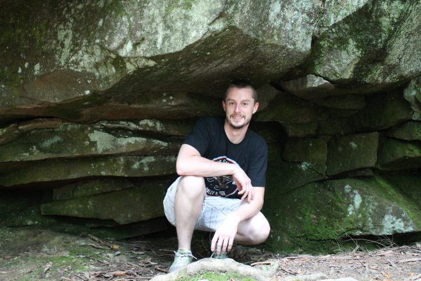

Christopher Kelly's Portfolio
Bio
Welcome to my portfolio page! My name is Chris Kelly! I really enjoy learning and coding, which has brought me to where I am today. This website contains some of my work and I will continue to build on it as I progress. Other than coding I enjoy snowboarding, swimming, bike riding, and hiking. I also enjoy trying out new technologies whenever I can, and I am hoping that this could open the door to new coding experiences. I would really like to get a Raspberry Pi and play around with some programs. I hope you enjoy my work!
LinkedInGithub: christopher4137
